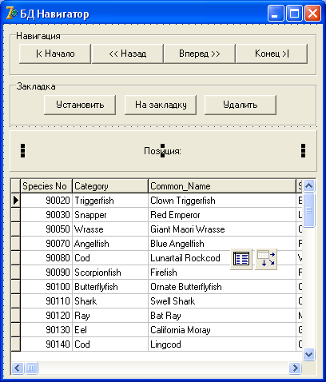

BDE
BDE (Borland Database Engine) – механизм доступа к базам данных, разработанный самой корпорацией Borland.
Сейчас этот механизм считается устаревшим, однако он обеспечивает наиболее простой доступ к базам данных различных форматов, и начинать знакомство с БД удобней именно с него.
Создайте новое приложение.
Мы продемонстрируем работу с БД и использование навигационных методов на демонстрационной таблице, поставляемой вместе с Delphi.
Назовите форму fMain, присвойте ей стиль bsDialog, и позицию по центру рабочего стола.
В свойстве Caption напишите "БД Навигатор".
Далее, установите на форму панель GroupBox, в свойстве Caption которого укажите "Навигация".
На эту панель установите 4 кнопки, на которых укажите "|< Начало", "<< Назад", "Вперед >>" и "Конец >|".
Это будут кнопки навигации – перемещения по таблице.
Ниже установите еще один GroupBox, в свойстве Caption которого напишите "Закладка".
В таблице можно установить закладку на любой записи, а потом перескочить на нее из любого места.
В этой панели мы будем добавлять закладку, удалять ее и перескакивать на нее.
Еще ниже поместите обычную панель, и удалите из нее текст.
Установите на нее компонент Label, в свойстве Caption которого укажите "Позиция:".
Теперь нужно, чтобы эта надпись всегда была посередине.
Поэтому свойство AutoSize переведите в False, а свойство Alignment – в taCenter.
Растяните Label, чтобы она занимала почти всю ширину панели.
Здесь вместе с надписью "Позиция:" будет выходить номер записи в таблице.
Теперь перейдите на вкладку Data Controls.
Здесь содержатся компоненты отображения данных из БД.
Найдите DBGrid и поместите ее на форму ниже панели.
Сетка DBGrid очень похожа на сетку StringGrid, которую мы изучали, но предназначена для отображения и редактирования данных из таблицы БД.
Сразу свойству ReadOnly (только для чтения) присвойте True, чтобы пользователь не мог испортить демонстрационную таблицу своим редактированием данных.
Чтобы получить доступ к БД, нужно еще кое-что.
На вкладке BDE есть компонент Table, который обеспечивает доступ к таблице средствами механизма BDE.
Компонент не визуальный, поэтому можете бросить его на любое место, например, поверх сетки.
Теперь в свойстве DatabaseName выберите демонстрационную базу данных DBDEMOS, которая поставляется вместе с Delphi.
В свойстве TableName необходимо указать саму таблицу, к которой мы желаем получить доступ.
Выберите там biolife.db.
Мы уже выбрали базу данных, то есть набор таблиц, и выбрали таблицу.
Однако, чтобы вывести в сетку данные из таблицы, требуется компонент управления данными таблицы.
Найдите на вкладке Data Access компонент DataSource.
Этот компонент обеспечивает связь базы данных из таблицы Table с навигационными компонентами, такими, как DBGrid.
Бросьте его рядом с Table.
В свойстве DataSet компонента нужно указать, с какой же именно таблицей мы желаем работать.
В данном примере у нас одна таблица, но ведь может быть и десяток!
Выберите там Table1.
Теперь выделите сетку.
Ей нужно указать, какой компонент будет управлять этой сеткой.
В свойстве DataSource укажите наш DataSource1.
Все, теперь мы сделали все приготовления.
Единственное, что осталось сделать – открыть файл с таблицей.
Выделите компонент Table1, и в свойстве Active укажите True.
Этим самым мы заставим таблицу открыться.
Внимание!
Работа с базой данных отличается от работы с файлами другого типа.
Когда ваша программа работает, например, с текстовым файлом, она открывает этот файл, считывает его содержимое в оперативную память ПК и закрывает его.
Пользователь работает уже не с файлом, а с его содержимым в оперативной памяти.
Когда он дает команду сохранить результаты работы, программа вновь открывает файл и перезаписывает в него данные из оперативной памяти.
С базами данных все иначе.
Как только вы открыли таблицу – указали True у компонента Table1 в свойстве Active, или же программно дали команду:
Table1.Active := True;
Или
Table1.Open;
то тем самым вы открыли файл.
Файл будет открыт на протяжении всего сеанса, и все изменения данных будут немедленно сохраняться в нем!
На самом деле, конечно, всё немного сложнее.
Данные изменяются не в физической таблице на жестком диске, а в её копии – компоненте Table.
Механизм BDE сам отправляет изменённые данные в физическую таблицу, и делает это пакетами – транзакциями.
Впрочем, на начальном этапе, нам об этом заботиться не нужно, можно считать, что мы отправляем данные прямо в таблицу на диске.
Приведенные выше команды открытия таблицы идентичны, вы можете пользоваться любым из этих способов.
Если вы все сделали правильно, то должны получить что-то вроде этого:
